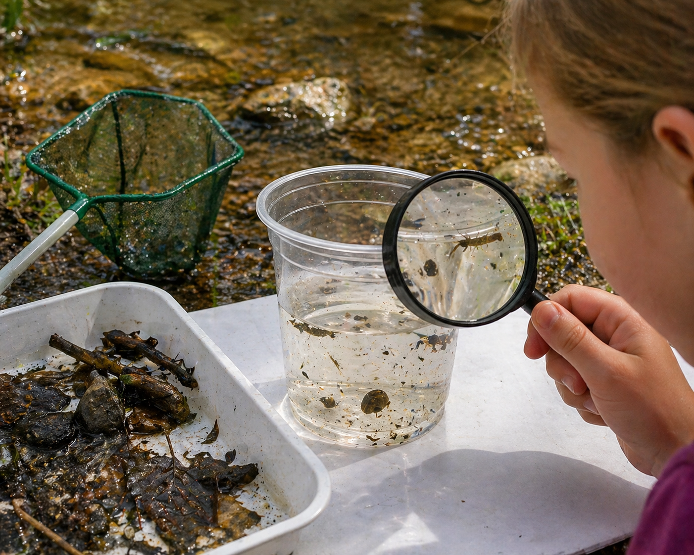
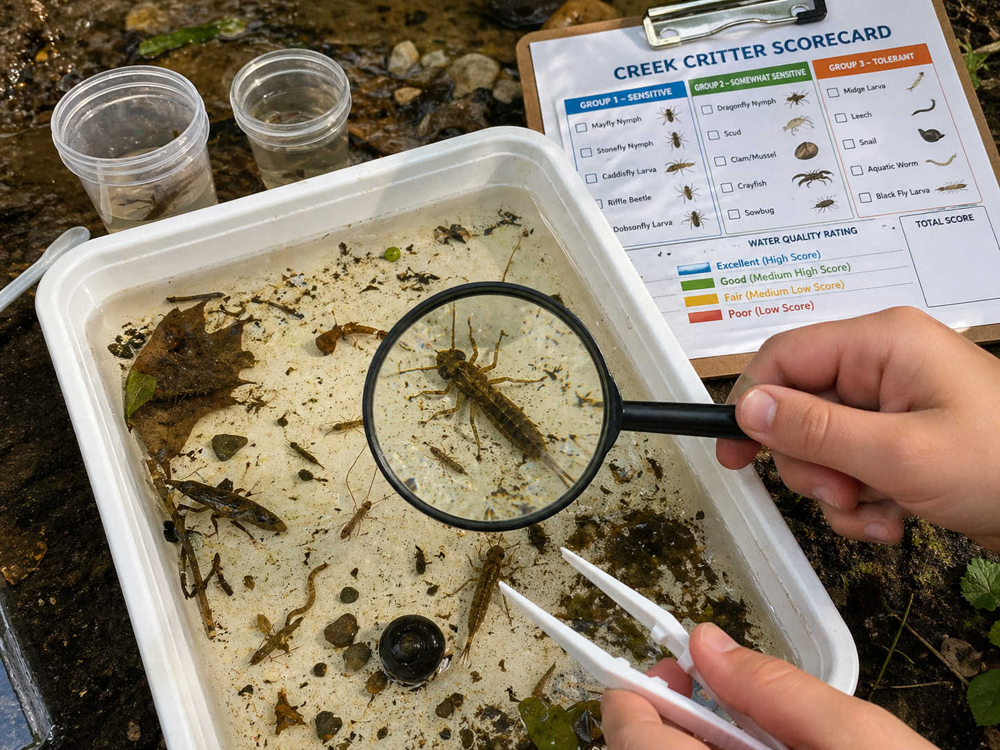
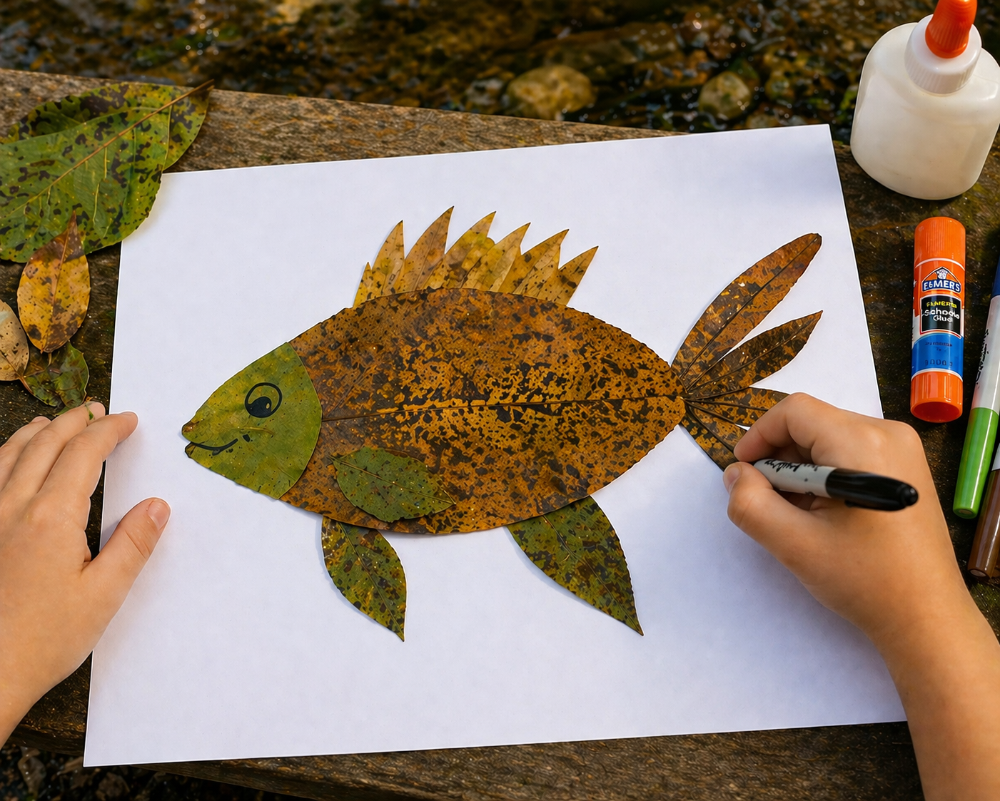

Set the tone for the walk and introduce the topic before beginning the walk. This should take between 5–10 minutes — nothing longer than the attention spans of the kids.
Opening Duaa
Start with a duaa for protection from harm and evil. The duaa can be led by either the walk leader or a child who has the duaa memorized.
“Allah has created every animal from water. Of them some move on their bellies, some move on two legs and some on four. Allah creates whatever He wills. Surely Allah has power over everything.”
Surah An-Nur 24:45
We have seen how animals form communities just as we do, and how that is an incredible sign from Allah. In this ayah, Allah highlights the diversity found in the way different animals move about: belly crawling, bipedalism, quadrupedalism, and more. Today, we will study animals that have unique locomotion — some terrestrial, some aquatic, and some a combination of both. What these creatures have in common is not how they move, but how they regulate their body temperature. Today, we will study cold-blooded animals, or animals who rely on external environmental conditions to help regulate their body temperature.
This is information to share with the kids. What you share and the level of detail will depend on the ages of the kids in your pod. Use your discretion.
Last week, we looked at the birds and mammals that splash in our local waters, all wrapped in waterproof feathers and warm, waterproof fur. But what about the animals that don’t have fur or feathers to keep them warm? Today, we are exploring the secret lives of fish, amphibians, reptiles, and macroinvertebrates — the incredible “cold-blooded” creatures that call our creeks and lakes home!
The Divine Design: Perfect Form and Guidance
When we look at a turtle baking in the sun or a frog resting in the cool mud, we are watching Allah’s perfect programming in action. Allah didn’t give a turtle a built-in heater like He gave a beaver. Instead, He gave the turtle a different form (a dark shell to absorb heat) and guidance (the instinct to climb onto a sunny log). Every single creature, no matter how weird or slimy, was given exactly what it needs to survive!
The Science: What is “Cold-Blooded”?
Scientists use the word Ectothermic (ecto = outside, thermic = heat) for cold-blooded animals.
Solar-Powered Animals: Humans are warm-blooded; our bodies act like little ovens to keep us at 98.6°F, no matter how cold it is outside. Ectotherms (reptiles, amphibians, and fish) cannot make their own body heat. Their body temperature is exactly the same as the air or water around them!
Nature’s Thermostats: Because they can’t sweat or shiver, they have to use their behavior to control their temperature. If a turtle is cold, it acts like a solar panel and basks in the sun. If it gets too hot, it slides back into the cool water.
The Temperature Trick: Pause or Fast-Forward! Because macroinvertebrates are cold-blooded, the creek’s temperature acts like a remote control for their bodies. Cold winter water hits “pause,” causing them to slow down, eat less, and burrow into the mud to sleep. But when spring warms the water, it hits “fast-forward!” The heat gives them the energy to become highly active, grow rapidly, and transform into adults — though they will smartly migrate to deeper, cooler pools if the shallow water gets too hot and loses oxygen in the peak of a Texas summer.
The Four Cold-Blooded Water Families
To understand who lives in the creek, we divide these solar-powered creatures into four main families:
Fish: Live entirely underwater and breathe through gills.
Amphibians (Frogs, Toads, Salamanders): Start their lives underwater breathing with gills (like tadpoles), but grow lungs once they mature in order to live on land. They have smooth, wet skin.
Reptiles (Turtles, Snakes, Alligators): Have dry, scaly skin and lay leathery eggs on land, even though they spend most of their time swimming.
Invertebrates (The Spineless Wonders): This is the biggest family of all! These are animals without a backbone. Instead of bones on the inside, many wear a hard armor shell on the outside (an exoskeleton), while others are completely soft-bodied. They are the tiny engines that keep the whole creek food web running! (Examples: Crawdaddies, Snails, Dragonfly Nymphs, Mosquito Larvae, Water Striders)
Local Landmarks: The DFW Ectotherms
If you walk the trails near Lake Grapevine or the Elm Fork of the Trinity River on a sunny day, you are guaranteed to see these local residents! Please print the field guide of common cold-blooded animals found in our local water systems, as well as the chart showing their coverings for adapting to their environment.
The Red-Eared Slider (The Sunbather): This is the most common water turtle in Texas! They have a distinct red stripe behind their eye. You will often see them stacked on top of each other on logs in the water, trying to catch the most sunlight.
The Diamondback Water Snake (The Swimmer): Many people are scared of snakes near the water, but this common North Texas snake is entirely non-venomous and harmless! They love to eat small fish and frogs. (Note for Trackers: Even though they are safe, a good Khalifah always gives wild animals plenty of space!)
The Alligator Gar (The River Dinosaur): This is one of the coolest fish in the Trinity River. They have long, narrow snouts filled with teeth, just like an alligator, and scales that are tough like armor. They look like prehistoric dinosaurs and can grow up to 8 feet long!
Blanchard’s Cricket Frog (The Tiny Jumper): A tiny, warty amphibian that lives on the muddy banks of our creeks. You usually hear them before you see them — their croak sounds exactly like two glass marbles clicking together!
If you take a dip-net to the edges of the Elm Fork, you will find an alien world operating right under the surface!
Dragonfly Nymphs (The Underwater Dragons): Before getting wings, baby dragonflies live entirely underwater! They are fierce hunters with spring-loaded jaws that shoot out to grab mosquito larvae or tadpoles.
Water Striders (The Surface Skaters): These bugs use microscopic, water-repellent hairs on their legs to trap air bubbles. This lets them literally skate on the “skin” of the water (surface tension) without sinking!
Mosquito Larvae (The Snorkelers): Baby mosquitoes look like tiny wiggling worms. Allah designed them with a tube on their tails that they use just like a snorkel, hanging upside down at the surface to breathe!
Freshwater Snails (The Creek Sweepers): Nature’s cleanup crew! They use a special tongue covered in thousands of microscopic teeth (like sandpaper) to scrape algae off underwater rocks.
Crawdaddies (The Escape Artists): These mini freshwater lobsters wear heavy armor but breathe through hidden gills. To escape a heron, they flip their powerful fan-like tails to shoot backward in a cloud of mud!
Character Connection: The Wisdom of Stillness (Muraqabah)
Cold-blooded animals are the absolute masters of stillness. A heron might stand still to hunt, but a turtle or a frog can sit perfectly motionless on a log for hours, just absorbing the sun and blending into their environment.
We live in a world that is always moving, rushing, and making noise. Sometimes, we forget to just stop and be still. In Islam, taking time to be quiet, still, and reflect on Allah’s creation is a beautiful practice called Muraqabah (mindfulness or deep reflection).
When we see a turtle basking silently on a log at the local creek, it can be a gentle reminder for us to sit still, take a deep breath, clear our minds, and quietly say SubhanAllah (Glory be to Allah) for the beautiful world around us.
Now that we are all up to speed on this week’s topic, let’s start walking! The following are some conversations and activities to do as you walk. This should take about 30–60 minutes — again, nothing longer than the stamina of the kids.
The Most Beautiful of Names
Introduce the name of Allah and its basic meaning as you start your walk. Encourage the kids to reflect on the name throughout the walk, as well as mentioning it whenever relevant.
الْبَدِيعُ
Al-Badee‘
The Originator
We have witnessed such incredible diversity in the animals we have studied — differences in their movement, their textures, how they eat and sustain themselves, and even how they regulate their body temperatures. And there is so much more diversity yet to be explored. All of this is the work of Al-Badee‘, the One Who Originated all that is novel, wonderful, marvelous, and unique! These animals and their systems are perfectly designed by their Creator. There is no better inspiration for human innovation than Allah’s creation. Biomimicry is a means of problem solving by looking at natural models, systems, and elements. Even those who deny Allah cannot deny the spectacular marvel of His creation. If only they understood that the Creator is infinitely more amazing than His creation, and is capable of so much more than we can imagine!
Phew, that was a good walk! Let’s pause and apply what we have learned and reflect on what we have observed.
Stories for Blooming Hearts
Share a story from our tradition that ties to this week’s topic. Note that creating an engaging storytelling experience is on the storyteller; these are just the basic details. A story told from the heart will reach hearts!
Musa AS and the Fish
Musa AS was blessed with the miracle of the Tawrah and being able to speak to Allah SWT directly. When Musa AS was given the Tablets and was allowed to speak with Allah directly, he asked Allah, “Who is more knowledgeable than me?”
Allah SWT informed him that there was actually a man named Khidr that was more knowledgeable than Musa AS and lived on far away islands.
Musa AS asked Allah how he would find Khidr. Allah SWT told him that he would find Khidr at the rock on the shore. Musa AS asked how he would know where that location was. Allah SWT told him to take a fish with him and wherever the fish would escape from them is where they will find the rock and Khidr.
With sincerity and a thirst to learn, Musa AS set off on a journey with his student and assistant, Yusha’ bin Nun, to meet this man with knowledge given especially from Allah — Al-Khidr. Musa AS told Yusha’, “Let me know if the fish falls or gets lost from us.”
As they were traveling, the fish slipped out of their bag and jumped back into the ocean!
When it was time to eat, Musa AS asked Yusha’ bin Nun to take the fish out.
Yusha’ told Musa AS that the fish had actually jumped out of the bag earlier but he forgot to tell Musa AS.
They returned to the place where the fish slipped out of the bag and sure enough it was where the rock was that Allah SWT had told Musa AS about.
Finally, Musa AS met Khidr, the teacher he’d been traveling to learn from!
Suggested Resource: Tafsir of Surat Al-Kahf, Ayat 60–65
Takeaways
This story shows us the beautiful humility Musa AS had and his thirst to seek knowledge. He was willing to travel great lengths to meet this teacher and learn from him.
The dead fish jumping back into the sea may seem strange, but Allah is able to make any miracle happen!
This story teaches us to trust in the plan of Allah. Even though things may seem to go wrong at times (like losing the fish), it can actually lead us to something better (like Musa AS meeting Khidr).
What lives in the water that we can’t always see? Let’s take a little peek and find out.

Materials to bring from home
Small clear plastic cups (one per child)
Magnifying glass
Nets
Materials to collect from nature
Creek water, submerged leaf litter, small rocks, and sticks — scooped from a shallow section of the creek bank
Activity
Have an adult use a net to agitate the bottom of a shallow creek and stir up rocks.
An adult should scoop a small amount of water from the creek edge into each child’s clear cup — just an inch or two deep.
Hold the cup up to the light or set it on a white surface. Watch. Wait. Don’t shake it.
Look closely: do you see anything moving? A tiny wiggle? A little speck swimming?
Hold the magnifying glass over the top of the cup. What do you see now that you couldn’t see before?
Describe what you see together: Does it swim fast or slow? Does it have a tail? Does it curl up?
See if you can identify the creatures using the printable ID card.
When you’re done looking, gently pour the water back to the creek edge.
Discussion
What do you see in your cup?
Water! And maybe… something tiny moving around in it. Those tiny things are animals. They live in the creek just like fish do, only much much smaller.
Why do animals live in the water?
Water gives them food, shelter, and a safe place to grow. Allah put them there on purpose: every creek is full of life, even when it looks empty.
What happens when we look through the magnifying glass?
Things look bigger! We can see things our eyes couldn’t find on their own. Allah made some of His creatures very small, too small to see without help. That’s a wonder in itself.
Should we keep the animals in our cup or put them back?
Put them back — the creek is their home, not our cup. We are guests when we visit the creek. Good guests leave things the way they found them.
Scientists who study water health look for tiny creatures called macroinvertebrates — animals without backbones that live at the bottom of creeks. Today we’re going to find them, name them, and see what they can tell us about our creek.
Bucket or large container with lid (for the leader to collect the sample)
Materials to collect from nature
Creek water, submerged leaf litter, small rocks, and sticks — scooped from a shallow section of the creek bank
Activity
Use a net to agitate the bottom of a shallow creek and stir up rocks.
Collect a small amount of water and pour into the white tray — about an inch of water. Children can also collect small samples in their individual cups.
Wait quietly for one minute. Watch for movement before you touch anything.
Gently swirl leaves and rinse rocks into the water. Check undersides of rocks with your magnifying glass.
When you spot a creature, use the spoon or pipette to scoop it gently to one side of the tray.
Look at the Creek Critter Hunt Card. Can you find a picture that matches? Circle it or put a tally mark next to it.
How many different kinds did you find? Count them up.
Return everything — water, leaves, rocks, creatures — gently back to the creek.
Discussion
What did you find in your tray?
Accept all answers. Prompt: did it have legs? A shell? Did it swim or crawl? Even tiny worms and specks count. Everything living in that water has a job.
Were some creatures easy to spot and some hard to find?
Some blend in with the mud or leaves — that’s called camouflage. Allah gave them that for protection. Smaller creatures often hide between layers of leaves or under rocks.
Did you find more than one kind of creature, or just one kind?
Finding lots of different kinds is a sign the water is healthy. A creek with only one kind of creature, especially worms, might be telling us something is wrong.
What do you think these tiny creatures eat? What eats them?
Many eat algae, leaves, or bacteria on rocks. Fish, frogs, and birds eat them. They are a link in Allah’s food chain — remove them, and everything above them suffers.
Real freshwater science used by ecologists and citizen scientists, including the Texas Stream Team. A “macroinvertebrate” is a small water creature without a backbone, big enough to see without a microscope, such as dragonfly nymphs, snails, crayfish, worms. Some species can only survive in clean water; others tolerate pollution. Counting them tells us how healthy a creek is.

Materials to bring from home
Two or three shallow white pans, baking trays, or clear bins (white surface makes tiny creatures easy to spot)
Plastic forceps or tweezers (gentler than fingers for small creatures)
Plastic spoons or pipettes (eye droppers) for moving very small critters
Magnifying glasses
Small clear cups or jars for sorting different kinds
Bucket or large container with lid (for the leader to collect the sample)
Materials to collect from nature
Creek water, submerged leaf litter, small rocks, and sticks, scooped from a shallow section of the creek bank
Activity
Find a shallow, slow-moving section of the creek with rocks, leaves, or underwater vegetation — these are the hiding spots.
Fill the white tray about an inch deep with creek water and set it on the bank.
Kick sample: Place the net on the creek bottom, downstream of you. Gently shuffle and disturb the rocks and gravel with your feet for about 30 seconds upstream of the net. The current carries dislodged creatures right into the mesh. Empty the net’s contents into the tray.
Leaf and rock sample: Pick up a handful of submerged dead leaves and rinse them in the tray. Carefully turn over rocks and brush their undersides into the water with your fingers.
Wait 1–2 minutes. As the water settles, small creatures will start moving — that’s when you’ll spot them.
Pick the bugs: Use forceps or a plastic spoon to gently lift each creature into a separate sorting cup. Sort by physical features. Group similar-looking creatures together: how many legs? Tails? A shell? A case? A flat or rounded body?
Identify and tally. Use the Creek Critter Scorecard to match each kind of creature. Check the box for every kind you find. Then count up: how many kinds did you find in Group 1 (sensitive)? Group 2 (somewhat sensitive)? Group 3 (tolerant)?
Add up your score and read the rating on the scorecard. Higher score means healthier water.
Gently return every creature to the creek before leaving.
Reference: Adapted from Texas Parks and Wildlife Department’s Bug Picking Macroinvertebrate Field Study — link
Discussion
What conclusion can you draw if you found species in Group 3, but not in Groups 1 or 2?
The water is likely polluted or low in oxygen. Only the toughest creatures can survive. It doesn’t mean the creek is dead — but it’s a sign something may be wrong upstream or nearby.
What can we conclude if we found several different kinds in all three groups?
The creek is likely healthy. A variety of creatures, especially sensitive ones, means the water is clean enough to support different kinds of life. Diversity is a sign of balance in the ecosystem Allah created.
What might be happening upstream that could be affecting water quality? Think about lawns, parking lots, farms, construction, storm drains.
Fertilizers and pesticides from lawns or farms wash in when it rains. Parking lots and roads send oil, chemicals, and litter through storm drains directly into creeks. Construction stirs up sediment that smothers stream bottom creatures. Trash blocks sunlight and uses up oxygen as it breaks down.
Based on what we found, what is the status of our creek: Not Polluted, OK, or Polluted?
Sensitive creatures are the base of the food web: mayfly nymphs and caddisfly larvae are what many fish, frogs, and birds eat. If they disappear, the animals that eat them struggle too. Healthy macroinvertebrates = healthy creek = healthy wildlife.
After completing the activity is a good time to stop for a snack. Power their brains and bodies with something nutritious! Bonus points for avoiding single-use plastics and being good Khulafa. Be sure to leave the area as you found it, or better, following the good manners taught to us by our Prophet ﷺ.
Now that this week’s walk is just about done, let’s wrap it up.
Tadabbur Among the Trees
Here are some prompts to help wrap up the walk. These prompts can be used to spark a conversation or to fill up your nature journal for today!
For Kids 1–4
Do you see any cold-blooded creatures sitting still? What do you think they’re thinking?
What cold-blooded creatures around you are moving? What might they be doing?
For Kids 5–8
How would life be different if you were cold-blooded? Think of one thing you would not be able to do if you couldn’t make your own body heat!
How would you keep yourself warm if you were cold-blooded?
Draw one creature you saw or learned about today and label what makes it unique.
For Kids 9–12
Use the field guide and make note of all the cold-blooded creatures you can spot today. What features and adaptations do they have? What makes them similar?
A turtle’s shell covers its soft body from the harsh environment. As Muslims, what can we do to protect our hearts from Shaitaan?
Need more nature? We got you! Here are some additional resources to further enrich your understanding and reflection. These additional resources can be utilized by the pod, by individual families, or a combination of both — whatever best fits your needs!
Prophetic Wisdom
Find an opportunity to share the wisdom of our Prophet ﷺ as you walk.
“Everyone in the universe, in the heavens and on earth, prays for forgiveness for the scholar, even the fish in the sea.”
Abu Dharr — Sunan Ibn Majah 239
This beautiful hadith demonstrates how connected we are to Allah’s creation in the sea and that we can even be in the duaa of animals. Some scholars say part of the reason that fish will make dua for scholars (and in another hadith it is mentioned about students on the path of seeking knowledge of the deen) is because people who learn and implement the deen do right by the earth and all of Allah’s creation. Conversely, people who are not conscious of Allah nor care about His creation may do things that harm the earth, including fish in the sea, as we see with different types of pollution, trash, and overconsumption.
“He is the Originator of the heavens and the earth, and when He decrees something, He says only, ‘Be,’ and it is.”
All of the amazing things we see in creation is a result of a single command from Al-Badee’: Be! And it is. SubhanAllah!
The stories of Musa AS in the Quran have several mentions of some of the cold-blooded animals we learned about today. Which ones can you think of?
The Heights (7:107)فَأَلْقَىٰ عَصَاهُ فَإِذَا هِيَ ثُعْبَانٌ مُّبِينٌ
“So Moses threw his staff and — lo and behold! — it was a snake, clear to all.”
In the most famous of the stories of Musa AS, Allah sent him to call Firawn to Islam and to leave his evil ways. As a way of strengthening his message and proving its divine origin, Allah blessed Musa AS with several miracles. One of these miracles was Musa’s staff turning into a giant snake when he threw it, and for it to turn back into a staff when he grabbed the snake.
“So We let loose on them the flood, locusts, lice, frogs, blood — all clear signs. They were arrogant, wicked people.”
When Firawn and his people disbelieved in the message that Allah sent Musa AS with, they were afflicted with various punishments. Each time a punishment would come, they would tell Musa AS, “Pray to your Lord to relieve us of this punishment, and we promise we will believe this time!” But as soon as Allah lifted the punishment, they returned to their wicked ways and refused to believe, so Allah would send another punishment, and the cycle would repeat!
“But when they reached the place where the two seas meet, they had forgotten all about their fish, which made its way into the sea and swam away.”
When Musa AS and his servant were seeking to meet Khidr, the location they were seeking was the meeting of two seas, but they missed the landmark. The cooked fish they had brought with them for lunch miraculously jumped in the water and swam away! When Musa AS asked his servant for the fish, he confessed that he had forgotten the fish at a rock they were resting at and that the fish made its way into the sea. This helped Musa AS realize that they had missed their landmark, so they turned back.
A flow of movements to get kids’ energy out at the beginning, or help them calm down at the end of the walk.
1
Begin by lowering yourself down to the earth near a body of water. Squat with feet wide apart and toes pointing out. Put your hands on the floor between your feet. Breathe in as you crouch low, then breathe out, take a few slow deep frog breaths. You can add a short jump up to release your energy!
2
Now come down to hands and knees and turn into a table. Slowly stretch your right arm forward and left leg back — like a gecko climbing a wall. Hold and breathe, and see if you can lower your limbs close to the earth, then exhale. Swap sides and do a few shallow gecko breaths on this side.
3
From here, lower your chest to the ground and extend your legs behind. Then push the ground away with palms planted firmly, extend your back like a water snake, breathe in and out with hissing sounds, and gradually bring your head back to neutral position and relax your arms.
4
Now move into a cross-legged position and fold forward, with slow inhales and exhales, bring your forehead close to the ground and wrap your arms around you. You’re hiding in your shell! Gradually slow your breath and try to stay low. Stay cosy and gradually lift your arms and head back up.
5
Move to standing up tall and bring one foot forward into a lunge, raise both arms straight up and take a deep breath and turn your body left like a fish. Return to center, slide the foot back and swap sides and with the other foot forward, turn towards the right. Bring both feet together and find stillness, listen to the water and breathe.
Here are more activities to try, whether as a group with your pod or individually at home.
For Kids 1–4: Slimy, Scaly, Shelly Sensory Tray
Fish have scales, turtles have shells, frogs have smooth wet skin. Allah gave each cold-blooded creature exactly the covering it needs. Today we get to feel what that’s like.
Materials to bring from home
Shallow tray or bin
Cooked spaghetti or wet noodles (frog skin / frog eggs)
Smooth wet river stones (fish scales / fish body)
Rough bumpy rock or dried pine cone (turtle shell)
Set up the tray with each texture in its own section before the walk.
Let children reach in and feel each material one at a time — don’t tell them what it represents yet.
Ask: does this feel rough or smooth? Wet or dry? Hard or squishy?
Hold up the matching picture card. “This is what a frog feels like — smooth and wet so it doesn’t dry out in the sun.”
Let them match each texture to its animal card.
Let them feel everything again with the names in mind.
Discussion
Why does a frog feel so slimy and wet?
Frogs breathe partly through their skin — it has to stay moist or they can’t breathe properly. Allah designed their skin to work like a second set of lungs.
Why does a turtle have such a hard bumpy shell?
The shell is part of their skeleton — it protects them from predators and injury. They can pull their whole body inside. Allah gave them their home on their back.
Why do fish have scales instead of smooth skin?
Scales protect them and help them move smoothly through water — like armor that doesn’t slow you down. They also help reflect light, which can confuse predators.
Which texture did you like the most? Which was surprising?
For Kids 5+: Cold-Blooded Animal Adaptations
Have you ever noticed a turtle sitting perfectly still on a log in the sun? Or a frog hiding under a cool wet rock? They’re not just resting — they’re doing something very important. Today we’ll find out what.
Materials to bring from home
Instant-read or infrared thermometer (for the add-on experiment)
Find three things to touch: a rock that has been sitting in full sun, a rock that has been sitting in full shade, and the surface of the creek water.
Touch each one with the back of your hand for five seconds. Don’t try to guess yet, just feel.
Put them in order from warmest to coldest. Write it down.
Now think: if you were a turtle and you needed to warm up your body to have energy to move, where would you go? If you were a frog and you needed to stay cool and moist, where would you go?
Add-ons for older kids
Use the thermometer to measure the actual surface temperature of the sun rock, the shade rock, and the creek water. Record each one.
Wait ten minutes. Measure all three again. Did anything change?
Calculate the difference: how many degrees warmer is the sun rock than the shade rock? Than the water?
If a turtle sat on the sun rock for thirty minutes, what would happen to its body temperature?
Discussion
Why do turtles bask in the sun?
Turtles are ectotherms: they can’t generate their own body heat the way we do. They have to absorb heat from their environment to warm up enough to digest food, move quickly, and fight off illness. A cold turtle is a slow, hungry, vulnerable turtle.
Why do frogs hide in damp shade instead of basking like turtles?
Frogs also need warmth but they lose moisture through their skin very quickly in direct sun. They balance temperature and moisture by finding cool, damp hiding spots, such as under rocks, in mud, near the water’s edge. Allah gave frogs and turtles different strategies for the same problem.
What would happen to a turtle or frog on a cloudy cold day?
They slow way down: digestion stops, movement slows, they may not eat at all. In winter, many become completely inactive and burrow into mud at the bottom of ponds. This is called brumation. This is why we see so many more cold-blooded animals on warm, sunny spring days.
What does this tell us about how carefully Allah designed each creature?
Every behavior — basking, hiding, burrowing — is a perfect match to the body Allah gave that animal. Nothing is random. Every instinct is a form of wisdom built in by the Creator.
Let your heart guide you to create a beautiful work of nature art. Use Allah’s divine creations as inspiration!
Leaf Creatures
Allah filled the water with cold-blooded life in every shape and size — scaly fish, armored turtles, darting frogs. Today we’ll use what He’s already placed around us to make some of our own.

Materials to bring from home
White paper or cardstock (one sheet per child)
Glue sticks or white school glue
Optional: markers or crayons for adding details (eyes, gills, scales)
Activity
Collect a handful of leaves during the walk — look for variety. Big flat ones make good bodies; small pointed ones make fins and tails.
Lay your leaves out on the paper without gluing first. Arrange them into the shape of a fish, frog, turtle, dragonfly, or crayfish — whatever creature from today you want to bring to life.
Once you’re happy with your arrangement, glue everything down.
Add details with markers if you like — an eye, gill lines, spots, patterns.